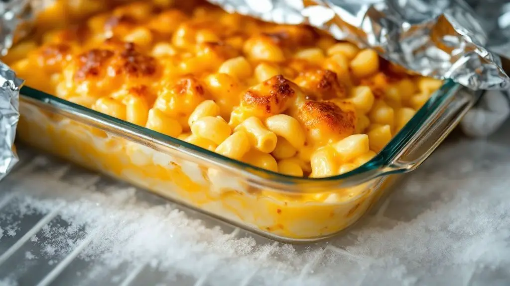

Mac and Cheese

Ingredients
- Short pasta
- Butter
- All-purpose flour
- Evaporated milk
- Whipped cream cheese, room temperature
- Seasoned salt or Creole seasoning
- Granulated garlic or garlic powder
- Sharp cheddar cheese, shredded, divided
- Monterey Jack cheese, shredded, divided
- Low-moisture whole milk mozzarella, shredded, divided
Steps
- Preheat the oven to 350ºF
- Boil the pasta
- Make the sauce
- Add the cheeses
- Assemble the mac and cheese
- Bake and serve
Home